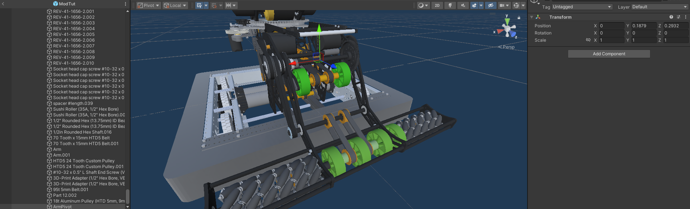
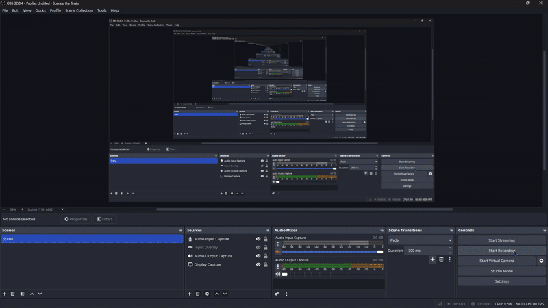
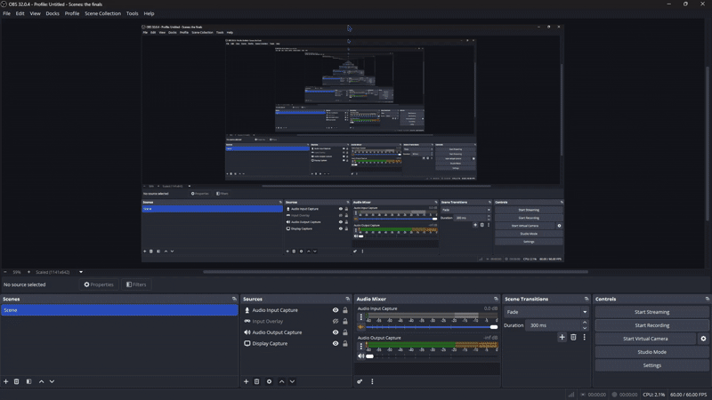
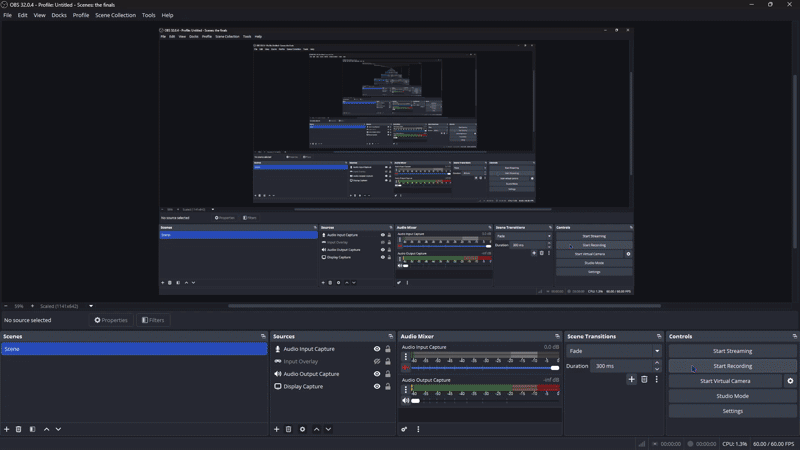
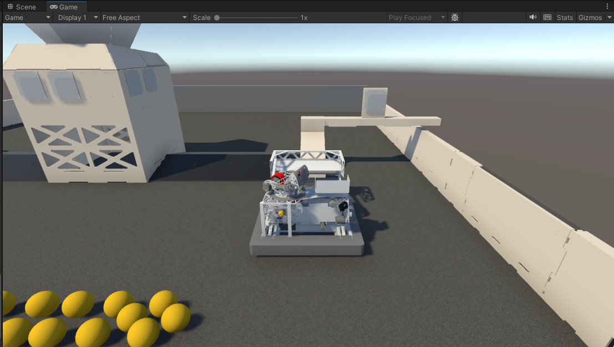
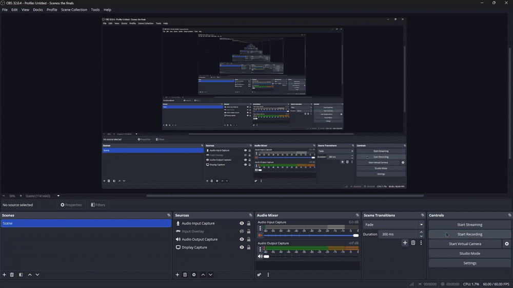
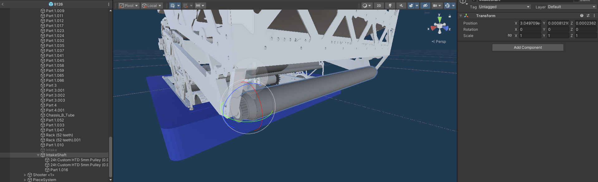
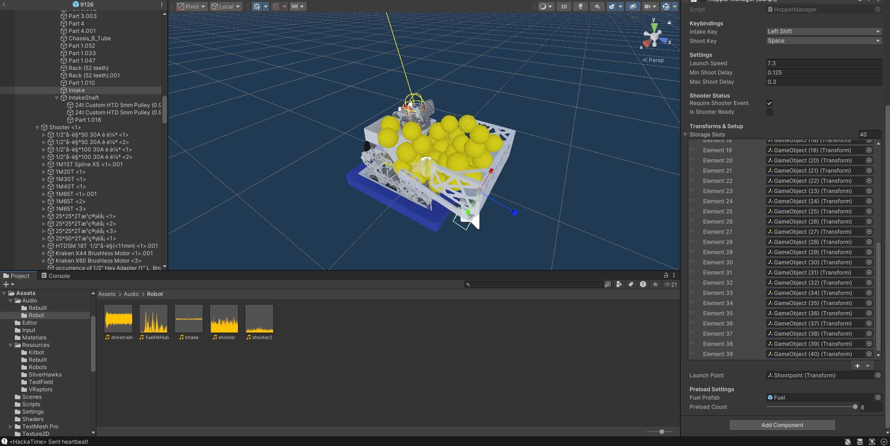

Overview
Welcome to the official documentation for Field Simulator. This documentation provides resources for adding custom robots to Field Simulator
Installation Guide
To install the game, download the appropriate package for your operating system from the download page. You can then extract the folder and run FieldSim.exe
System Requirements
This game is quite optimized(60 FPS on a laptop without a graphics card). Regardless, you should still have a capable CPU and GPU for this game. For editing and modding, see Unity's system requirements on Unity's website
Controls & Keybinds
Use W, A, S, D to move around, Spacebar to shoot, Left Shift to
intake, Right Shift to start the game and enable/disable robot, R to restart the
game(only after you click play), KAim at hub(turret only), J/L to pass left and
right respectively.
Featured FRC Game
Intro to modding
FieldSim allows players to make custom robots! FieldSim is set up to make making turret and static single
shooters very easy! If you are interested in modding, you should already have some basic Unity and maybe a
little coding experience prior before attempting to make your own robot. FieldSim does have its limitations,
the limitatoins of Fieldsim are as follows:
1. Swerve is not implemented
This project
was one of my first, and swerve was very difficult to get working(with a truckload of bugs)
2.
Unity doesn't like high fidelity models
It might be just my computer, but Unity struggles to run
all of the phyisics and other things when the robot you imported has more polygons that a typical fab
asset.
3. Drum shooters and multi turrets are not possible as of now
Due to the way
that the hopper system works, drum shooters and multiple turrets are not possible
Getting started!
With all of that out of the way, lets get started! First, you will need Unity
Go to Unity's website and download Unity hub. Then download Unity 2022.3.62f3(you may need to go into unity archive). Download this project by clicking github on the top right of this website. Download the repo, unzip it and open it in Unity. Congratulations, you now have FieldSimulator on your computer!
Importing Robot CADs
Importing a robot CAD is a necessary step in getting your robot into this game. Start by exporting your robot's CAD from the software it was designed in. I recommend exporting it as an FBX, OBJ, or GLB/GLTF. If you would like to already start optimizing your CAD, open it in blender.(Your cad does not need to have the tank drive base thrown in, FieldSim already has the drivebase)

Once in blender delete all of the screws, that really helps with optimizing the CAD. Then export that blender file as an FBX. Drag and drop your robot CAD into Unity's inspector, it should look like this

How to make your robot driveable!
Next, you should consider making your robot driveable. This should be really easy since I included a
drivebase thats all rigged up. Simply duplicate the Drivebase prefab in /Resources/Robots/. You
can name it to whatever you want. You can then drag and drop your Robot CAD, make sure to parent it to
"Robot". Right click the mesh, and select Prefab > Unpack Completely. You should then be able to
delete all drivetrain components on the robot. Look at this reference picture for example.

To test out your robot, open Scenes/TestField, Delete the robot currently there, and drag your
prefab onto the field. Raise it over the field like so. Hit play and try it out!

Make a sliding assembly for your intake
To make your robot have a sliding intake, there are multiple steps.
1. Reorganize gameobjects
Create an empty game object, call it SlidingWhateverItIs(EX.
SlidingIntake). Then create a child of it, naming it ___Rack(EX.IntakeRack). Orient your Rack gameobject so
that its z axis arrow points along the plane that your sliding thing will slide along. Make all meshes a child
of that ___Rack object you just created. Like so

2. Fix transforms
Click your Sliding object, and go to the top area and click
Tools > Snap Selected Object to Child Mesh Center This should make the transform on that object
go all wacky. If you select its child(the Rack object), it should just have a rotation, everything else should
be 0s.
3. Make it all work
On your Rack gameobject, click
Add Component > Sliding Rack. Modify the Extended and Retracted positions by moving around the
Rack gameobject to get transforms (Don't worry, the script will teleport everything back into place at the
end). Assign your keybind for opening that rack, change the Lerp speed and your done! It should look something
like this

Making a hinged assembly for your intake
Not all robots have sliding intakes. Some have hinged intakes such as the 9450 bot featured in FieldSim. You should already have your driveable robot by this point. Lets get started!
1. Set up gameobjects
Adding a hinged intake has a similar process compared to a sliding
intake. Start by creating a gameobject and call it Arm. Create a child of that gameobject, name it ArmPivot.
Set your transform to local, and move ArmPivot so that one of its axes lie on the pivot point. Take a look at
this example picture, the X axis of the ArmPivot is along the hexshaft on the intake hinge.

Once you have set up your pivot, make the, drag all of the meshes of your intake to be its children. Once you finish that you should be able to rotate that pivot gameobject to move the intake. It should looks something like this:

2. Add the script and test!
Now its time to make it all work. Click on your ArmPivot
gameobject, Add Componenet > Rotating Joing(script). Based on the axis that you have to rotate
your pivot to raise/lower this hinge, make that corresponding axis 1, and the others 0 in the hinge settings.
Rotate your hinged joint around to find your retracted and extended angle. Dont worry, the script will revert
the changes when you start playing. Bind a key to the script, and try it out!

Making a turret bot!
Static shooter bots don't need any effort in FieldSim, and turret bots are just cooler(imo). Here is how to make one!
1. Set up gameobjects
To start, create a gameobject, call it turretPivot, or something
similar. Position it like so, so if you rotate it along an axis it will rotate the turret. Make all turret
gameobjects a childof that pivot point. You should be able to rotate the turret along an axis like so.

2. Make the turret point towards its target
Now that the turret gameobject is ready, hit
Add Component > Turret Aim. Drag and drop the transform of the pivot object onto the script.
Select the axis that the turret has to rotate on to aim. Then play the game. The turret should aim towards the
hub after enabling the robot. It might be off, so tweak angle offset as necessary. When playing, try pressing
J/K/L to change targets.

3. Set up hood game object
This is a similar process to adding a hinged joint. Start by
making an empty child of the turret pivot. Call it hood pivot, and put it on the flywheel, make sure that one
of its axes align with the way the hood should move. Then make the meshes of the hood its children. You should
be able to rotate your hood like this now:

4. Set up hood aiming
This is the final step of making your turret. Start by clicking on
your hoodpivot gameobject, Add Component > Hood Aim. Drag the transform component onto the
scripts gameobject slot, and select the axis on which the hood should rotate. Then adjust the parameters to
make the robot aim towards the hub correctly. The best way to do this is to go to the neutral zone on
testfield, and rotate through J > K > L, to switch targets. The turret should rotate, and the hood should also
adjust
Animating shafts on the robot
Most of the hexshafts and rollers in Rebuilt robots spin to move fuel around. This is possible in FieldSim. You can use this on intakes, indexers and shooters. On shooters you can even force your shooter to not shoot until you have fully spun up the shaft. The spinning shaft system in Fieldsim also allows you to have dynamic sound.
1. Set up gameobjects
Start by creating a gameobject, for this tutorial, I am going to
call it IntakeShaft, since I am going to animate the intake rollers on 9126. Make the rollers parts a child of
the intakeshaft gameobject. The transform needs to be such that one axis of the intakeshaft gameobject is the
axis that the roller is going to spin. If the gameobject is not centered properly, use
Tools > Snap Object to Child Mesh Center. It is okay if the intakeshaft gameobject is not
perfectly centered.

2. Set up script
Add the script by clicking on your intakeShaft gameobject, and
Add Component > Spinning Shaft. Drag the transform component into the corresponding slot on the
script, name the shaft if you would like to. Then you can adjust the speeds of the shaft, I would recommend
decreasing the deceleration rate, as it doesnt feel realistic. Try 7200 as the deceleration rate. Change the
axis to the axis that your roller needs to spin on. Then bind your keybind to the shaft, and you can get
started on audio!
3. Set up audio(optional)Click Add Component > Audio Source, and drag and drop
that component into the script's slot. Adjust the pitch settings and try it out
4. Set up shooter(Only for a shooter/turret)
Add one event for max speed reached and ramp
down started. Drag and drop your intake gameobject(see next step for how to set this up), and assign
setshooterready and setshooternotready to the corresponding events.
Making your robot intake, hold fuel, and shoot
This will make your robot work, you want that right?
1. Make your intake intake
Start by going to the part of your intake that
moves(doesnt matter if intake doesnt come out), and create a gameobject. Call it Intake. Click
Add Component > Box Collider. Resize the box collider to be the area that you want to intake
from, make sure to check "Is Trigger" on the box collider. Then click
Add Component > Hopper System., and bind a key to intake.
2. Make your hopper hold fuel
Create a gameobject that is a child of your robots body.
Name it PieceSystem. Create a bunch of empty gameobject children under PieceSystem. Then go to your Intake
gameobject and start adding storage slots. Drag those children gameobjects of piecesystem to those slots. You
should start to see fuel populate the hopper. Start with fuel closest to your shooter.
3. Set up your shooterCreate a game object, call it shooter.(Make this a child of your hood if your robot has a turret) Move this so that it is where fuel will be shot out. Go back to your Intake gameobject, start entering values for your shooter. Check Reqiure Shoote Ready if you made a spinning shaft to make your robot wait for the shaft to spool up before shooting. Scroll down to Launch point, and assign your shooter gameobject
4. Add preload fuel(optional)
You can have up to 8 fuel in your robot at the beginning of
the match. To do this, go to preload settings on your Intake gameobject, click fuel prefab, select assets, and
fuel. Then adjust your preload count.
When you finish all of this, you should have something like this!
